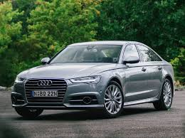

Audi 100, с 1994 года Audi A6, — семейство автомобилей бизнес-класса, выпускающихся под маркой Audi, внутреннее обозначение — «тип C». Премьера Audi 100 состоялась в 1968 году, с августа 1994 года этот модельный ряд носит название А6.
Сегодня Audi A6 предлагается в четырехдверной версии с кузовом седан и в пятидверной версии Avant (универсал), ранее выпускались также двухдверные модели, купе и хэтчбек. Спортивная модификация А6 производится под наименованием Audi S6, а наиболее мощная версия A6 производится под наименованием RS6, что расшифровывается как "RennSport".